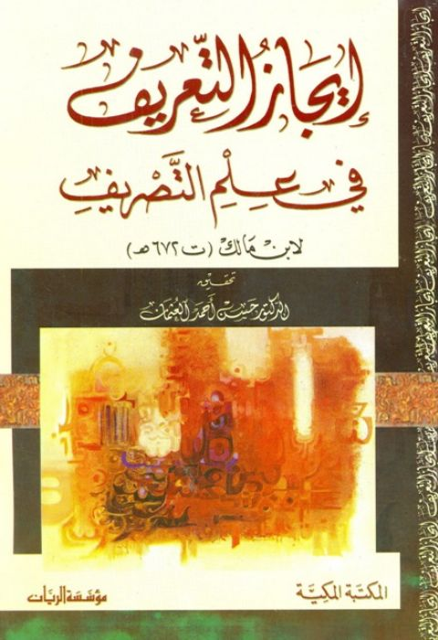

Downloads need an internet connection.
إيجاز التعريف في علم التصريف لابن مالك
Authors: ابن مالك
Editors: حسين أحمد العثمان
Publishers: مؤسسة الريان المكتبة المكية
**▫️ العنوان: إيجاز التعريف في علم التصريف لابن مالك** ▪️ المؤلف: #محمد_بن_مالك_الطائي_النحوي ▫️ المحقق: #حسين_أحمد_العثمان ▪️ الناشر: #المكتبة_المكية • #مؤسسة_الريان ▫️ تاريخ النشر: 1425هـ 2004م ▪️ بلد النشر: مكة المكرمة، #السعودية • بيروت، #لبنان ▫️ الطبعة: 1 ▪️ عدد الأجزاء: 1 ▫️ الصفحات: 279 ▪️ نوع الوعاء: #كتاب ▫️ التصنيف الرئيسي: #اللغة_العربية ▪️ التصنيف الفرعي: #صرف ۪